Code
library(showtext)
showtext_auto(enable=T)
font_add("STKaiti","/Library/Fonts/stkaiti.ttf")library(showtext)
showtext_auto(enable=T)
font_add("STKaiti","/Library/Fonts/stkaiti.ttf")library(dplyr)
library(ggplot2)mytheme <- theme(
text = element_text(size = 16,
family = "STKaiti"),
axis.title = element_text(size = 20)
)load("../Input/collected_data/World_happines_Data.RData")happy_data2 <- happy_data %>%
rename(
happiness = `Life Ladder`,
wealth = `Log GDP per capita`,
country = `Country name`,
choise = `Freedom to make life choices`,
life_expectancy = `Healthy life expectancy at birth`
)
head(happy_data2)# A tibble: 6 × 11
country year happiness wealth `Social support` life_expectancy choise
<chr> <dbl> <dbl> <dbl> <dbl> <dbl> <dbl>
1 Afghanistan 2008 3.72 7.35 0.451 50.5 0.718
2 Afghanistan 2009 4.40 7.51 0.552 50.8 0.679
3 Afghanistan 2010 4.76 7.61 0.539 51.1 0.600
4 Afghanistan 2011 3.83 7.58 0.521 51.4 0.496
5 Afghanistan 2012 3.78 7.66 0.521 51.7 0.531
6 Afghanistan 2013 3.57 7.68 0.484 52 0.578
# ℹ 4 more variables: Generosity <dbl>, `Perceptions of corruption` <dbl>,
# `Positive affect` <dbl>, `Negative affect` <dbl>ggplot(happy_data2,aes(x=wealth,y=happiness))+
geom_point()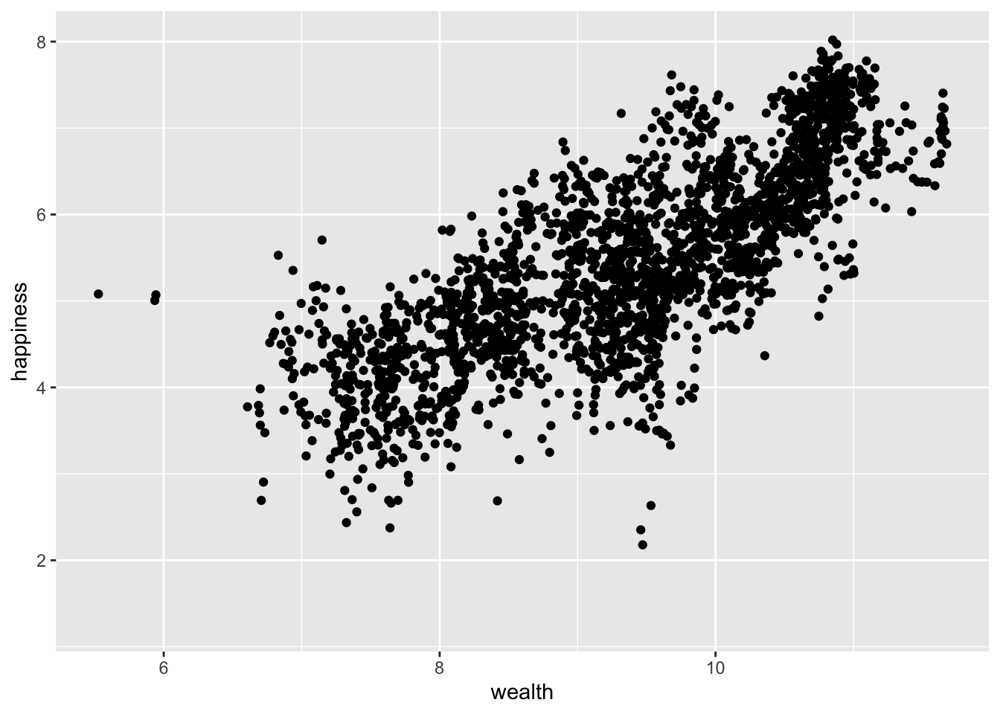
library(plotly)
pic <- ggplot(happy_data2,aes(x=wealth,y=happiness,group=country))+
geom_point()
ggplotly(pic)happy_data3 <- happy_data2 %>%
filter(country %in% c("United States","Germany","India","Venezuela",
"China"))pic <- ggplot(happy_data3,aes(x=year,y=wealth,color=country))+
geom_point()ggplotly(pic)a <- pic+geom_smooth()
b <- pic+geom_smooth(method = "lm")library(patchwork)
a+bggplot(happy_data3,aes(x=life_expectancy,y=happiness))+
geom_point()+
geom_smooth(method = "lm")+
stat_ellipse()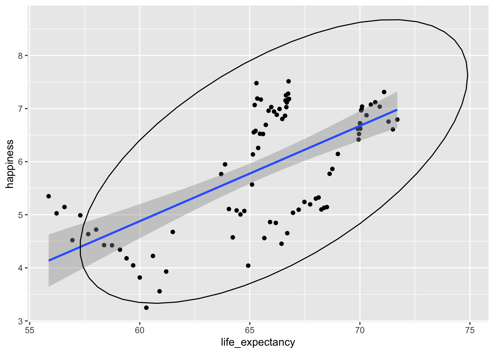
ggplot(happy_data3,aes(x=life_expectancy,y=happiness,colour = country))+
geom_point()+
geom_smooth(method = "lm")+
stat_ellipse()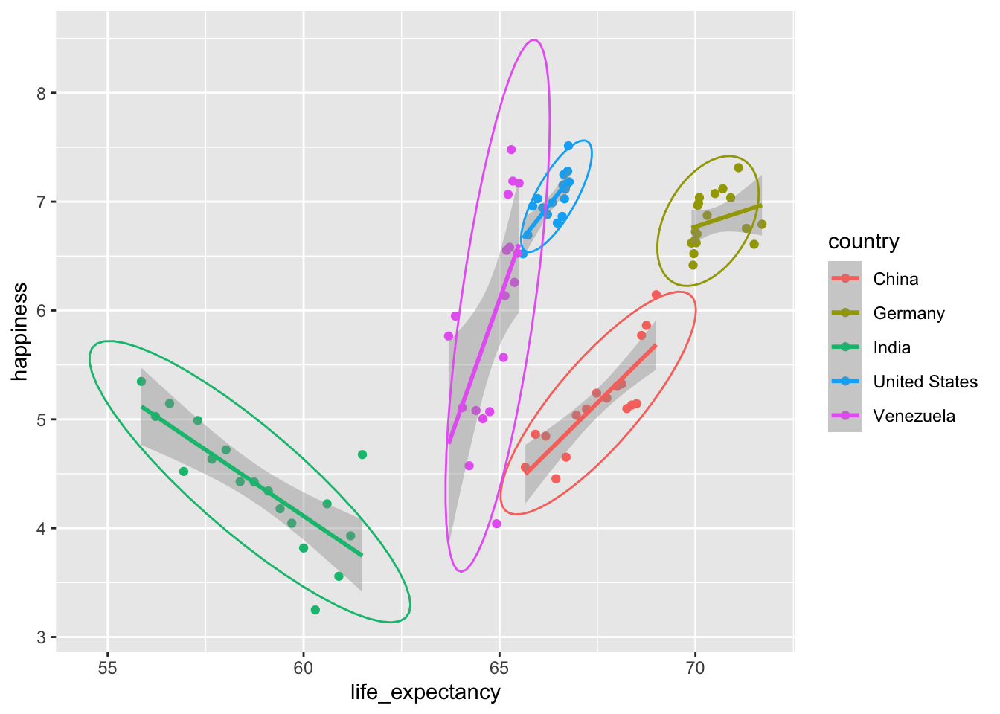
set.seed(1)
pic <- ggplot(happy_data3,aes(x=life_expectancy,y=happiness,shape = country,size = wealth,colour = `Perceptions of corruption`))+
geom_point()
pic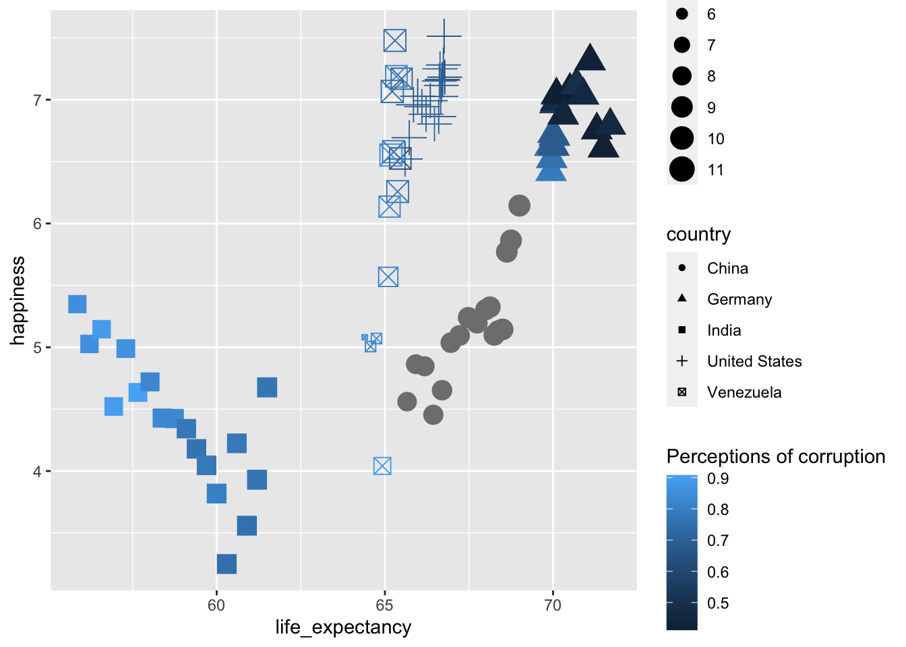
library(ggrepel)
pic+ggrepel::geom_label_repel(aes(label=year),size=1,max.overlaps = 100)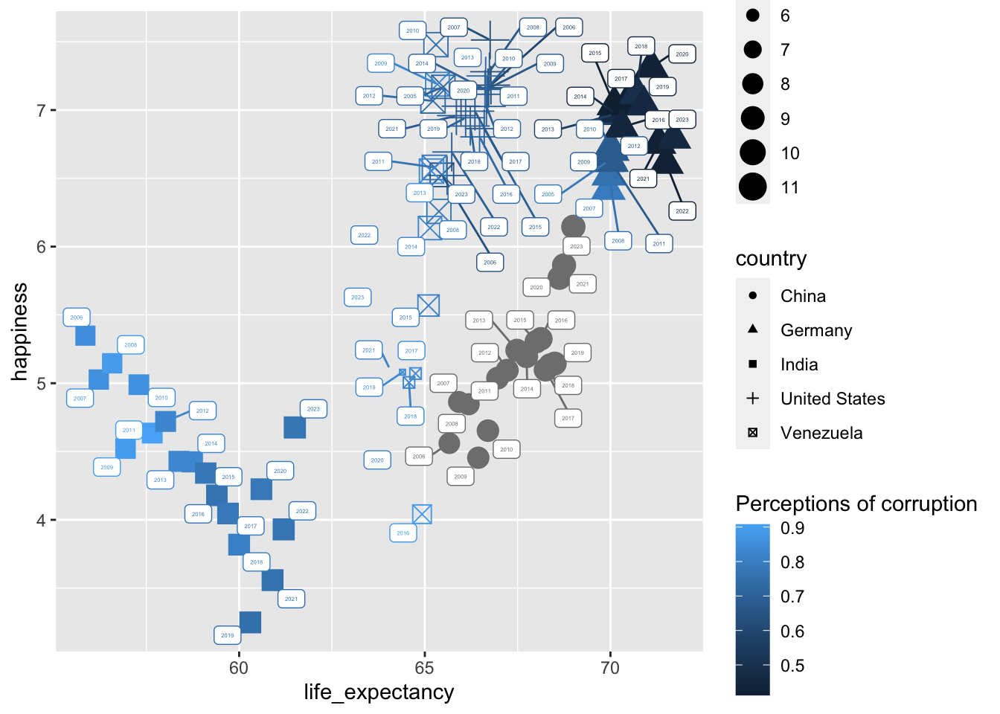
数据处理
happy_data4 <- happy_data3 %>% mutate(
`Social support`=case_when(
`Social support`>median(`Social support`,na.rm=T) ~ "have loved ones",
TRUE ~ "lonely"
)
) %>%
mutate(Generosity=case_when(
Generosity>median(Generosity,na.rm=T)~"generous",
TRUE~ "greedy"
))set.seed(1)
pic2 <- ggplot(happy_data4,
aes(x=life_expectancy,
y=happiness,
shape = country,
size = wealth,
colour = `Perceptions of corruption`))+
facet_grid(Generosity~`Social support`)+
geom_point(position = position_jitter(width = 0.5,height = 0.5))
pic2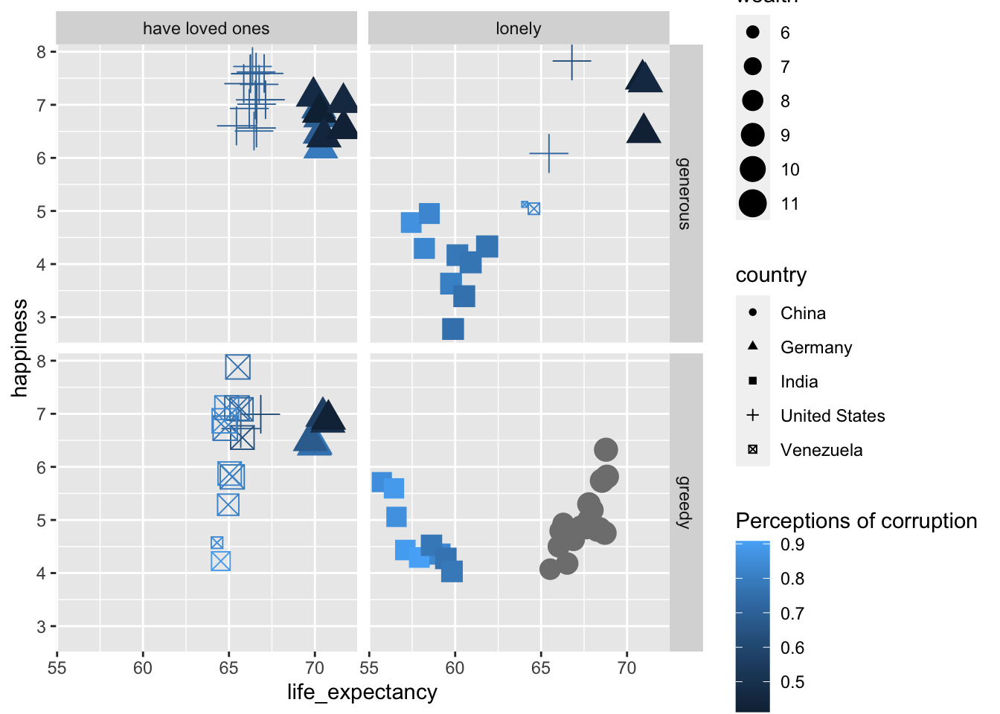
pic2+ggrepel::geom_label_repel(
aes(label=year),size=1,max.overlaps = 100
)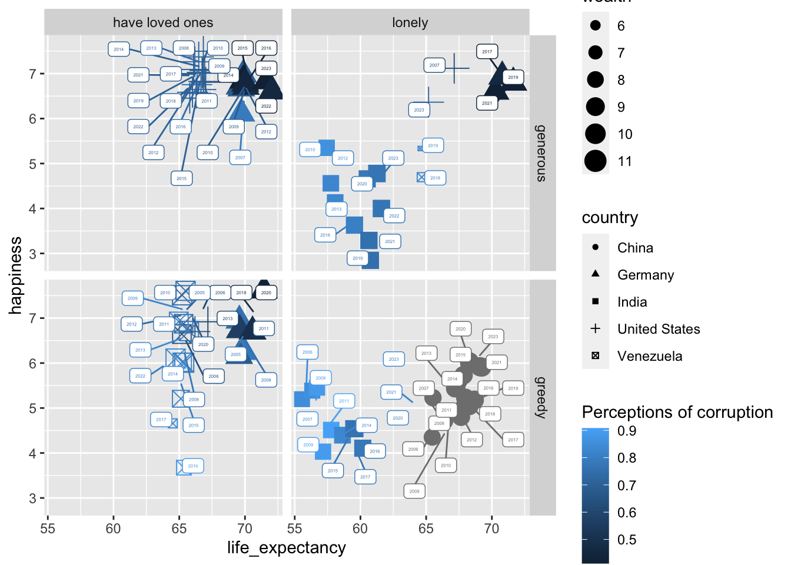
pic3 <- pic2+
labs(
title = "世界幸福指数: 2005-2023",
subtitle = "5个国家为例",
caption = "https://worldhappiness.report/data/",
x = "预期寿命",
y = "幸福指数"
)+
scale_shape_manual(values = c(15,16,17,18,14))+
theme(
text = element_text(family = "STKaiti"),
legend.position = "left",
plot.title = element_text(color = "blue",size = 15),
plot.subtitle = element_text(face = "bold"),
plot.caption = element_text(face = "italic"),
axis.title = element_text(color = "blue",size = 14))+
scale_x_continuous(breaks = c(55,60,65,70,75))+
scale_y_continuous(breaks = seq(2,8,1))+
geom_hline(
yintercept = median(happy_data4$happiness,na.rm = T),
linetype="dashed",
color="green"
)
pic3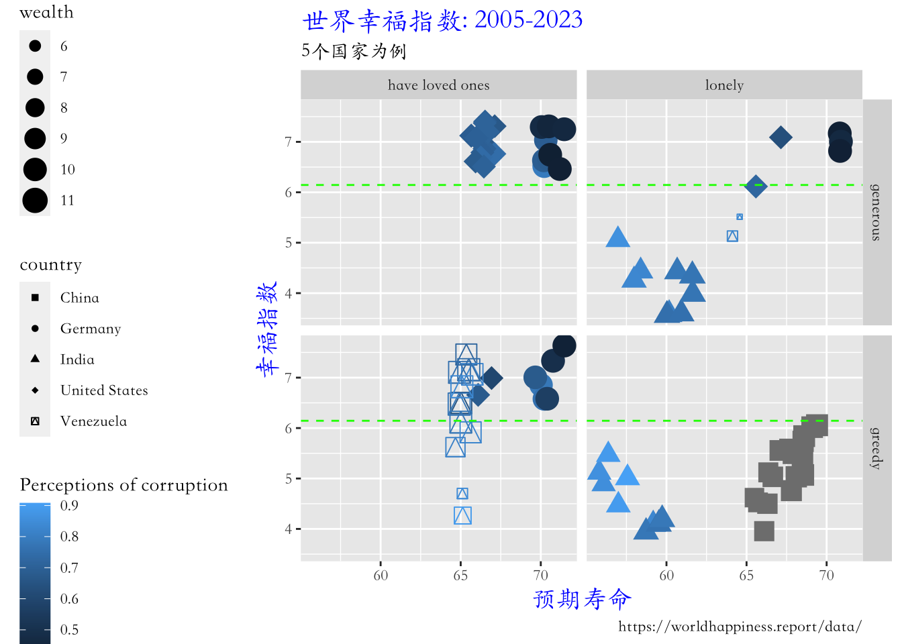
library(ggpubr)
pic3+ggrepel::geom_label_repel(
aes(label=year),size=1,max.overlaps = 100
)+ggpubr::theme_cleveland()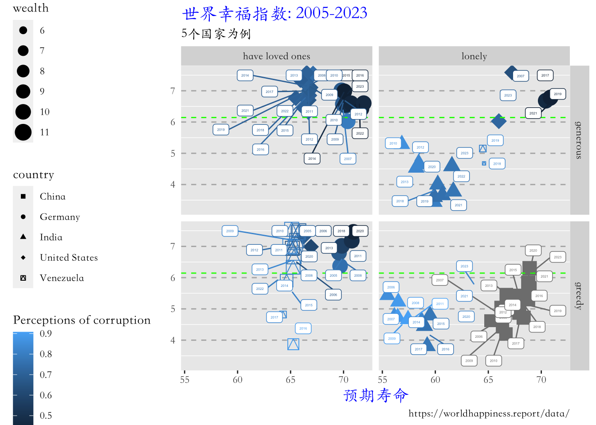
knitr::kable(str(iris))'data.frame': 150 obs. of 5 variables:
$ Sepal.Length: num 5.1 4.9 4.7 4.6 5 5.4 4.6 5 4.4 4.9 ...
$ Sepal.Width : num 3.5 3 3.2 3.1 3.6 3.9 3.4 3.4 2.9 3.1 ...
$ Petal.Length: num 1.4 1.4 1.3 1.5 1.4 1.7 1.4 1.5 1.4 1.5 ...
$ Petal.Width : num 0.2 0.2 0.2 0.2 0.2 0.4 0.3 0.2 0.2 0.1 ...
$ Species : Factor w/ 3 levels "setosa","versicolor",..: 1 1 1 1 1 1 1 1 1 1 ...knitr::kable(iris[1:20,])| Sepal.Length | Sepal.Width | Petal.Length | Petal.Width | Species |
|---|---|---|---|---|
| 5.1 | 3.5 | 1.4 | 0.2 | setosa |
| 4.9 | 3.0 | 1.4 | 0.2 | setosa |
| 4.7 | 3.2 | 1.3 | 0.2 | setosa |
| 4.6 | 3.1 | 1.5 | 0.2 | setosa |
| 5.0 | 3.6 | 1.4 | 0.2 | setosa |
| 5.4 | 3.9 | 1.7 | 0.4 | setosa |
| 4.6 | 3.4 | 1.4 | 0.3 | setosa |
| 5.0 | 3.4 | 1.5 | 0.2 | setosa |
| 4.4 | 2.9 | 1.4 | 0.2 | setosa |
| 4.9 | 3.1 | 1.5 | 0.1 | setosa |
| 5.4 | 3.7 | 1.5 | 0.2 | setosa |
| 4.8 | 3.4 | 1.6 | 0.2 | setosa |
| 4.8 | 3.0 | 1.4 | 0.1 | setosa |
| 4.3 | 3.0 | 1.1 | 0.1 | setosa |
| 5.8 | 4.0 | 1.2 | 0.2 | setosa |
| 5.7 | 4.4 | 1.5 | 0.4 | setosa |
| 5.4 | 3.9 | 1.3 | 0.4 | setosa |
| 5.1 | 3.5 | 1.4 | 0.3 | setosa |
| 5.7 | 3.8 | 1.7 | 0.3 | setosa |
| 5.1 | 3.8 | 1.5 | 0.3 | setosa |
ggplot(iris,aes(x=Sepal.Length,y=Sepal.Width))+
geom_point()+
facet_wrap(~Species)+
geom_smooth(method = "lm",se=F,color="red")+
labs(x="花萼长度(cm)",y="花萼宽度(cm)",
title = "鸢尾花不同品种的花萼长宽比较")+
theme_bw()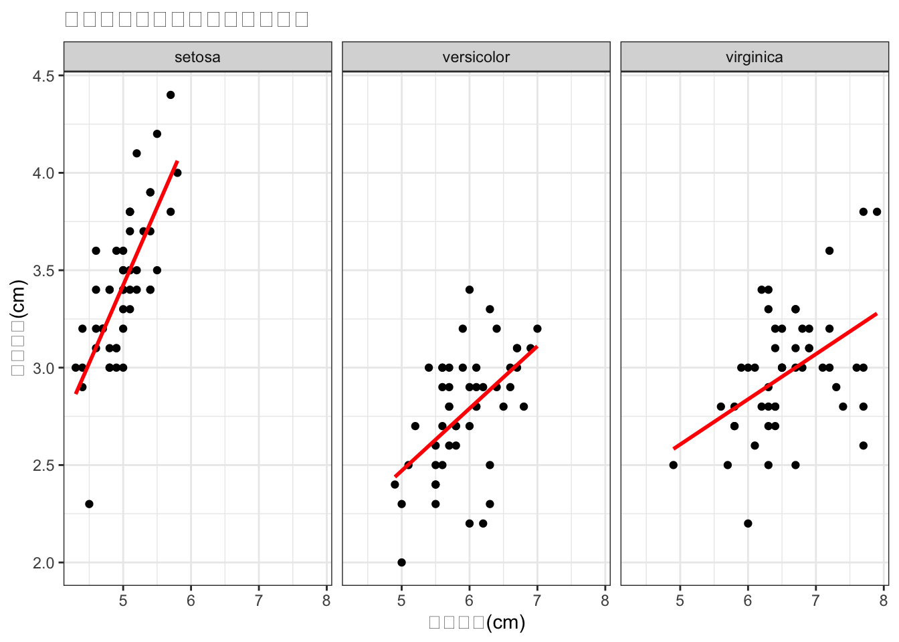
library(ggplot2)
ggplot(iris,aes(x=Sepal.Length,y=Sepal.Width))+geom_point()+
facet_wrap(~Species)+
geom_smooth(method = "lm",se=F,color="red")+
labs(x="花萼长度(cm)",y="花萼宽度(cm)",
title = "鸢尾花不同品种的花萼长宽比较")+theme_bw()+
theme(text = element_text(size = 18,family = "STKaiti"))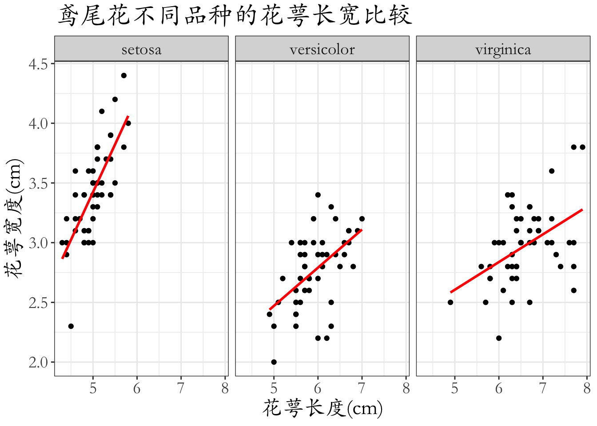